editorial 테마 발표
보고서 · 평가 자료처럼 숫자와 근거를 차분하게 보여 주는 발표용 테마. 잡지 편집 디자인처럼 연세블루(#00205b) 색면과 금색 가는 강조선, 아주 굵은 제목과 아주 가는 큰 번호를 대비시킨다. 상자는 모두 직각이고 그림자 · 그라디언트가 없다. 표지 · 간지 · 블록형 레이아웃과, 프롭에 배열만 넘기면 그려지는 인포그래픽 컴포넌트 12종(막대 · 꺾은선 · 덤벨 · 흐름도 · 가설표 · 변수 카드 · 큰 숫자 · 점검 목록 · 총평 · 해석 범위 …)이 있다. 목차 사이드바와 조작은 hossam과 같다.

미리보기
예제 덱(editorial-example.md)의 쪽들이다. 그림을 누르면 크게 본다.

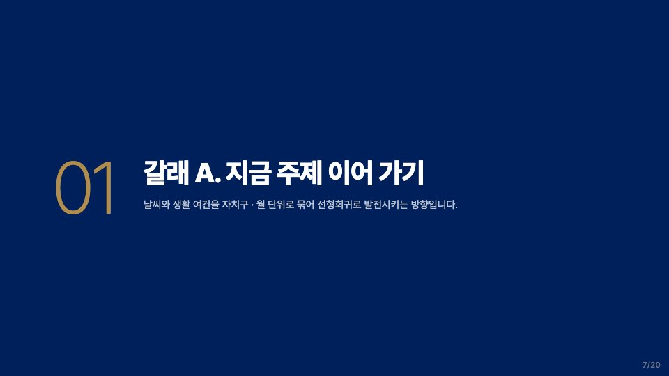

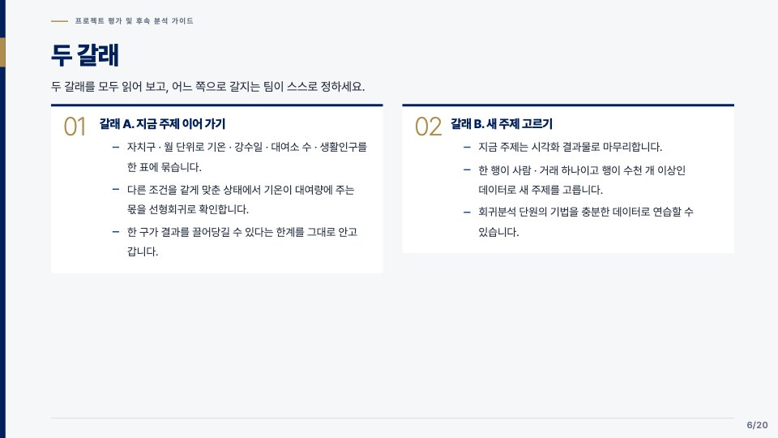

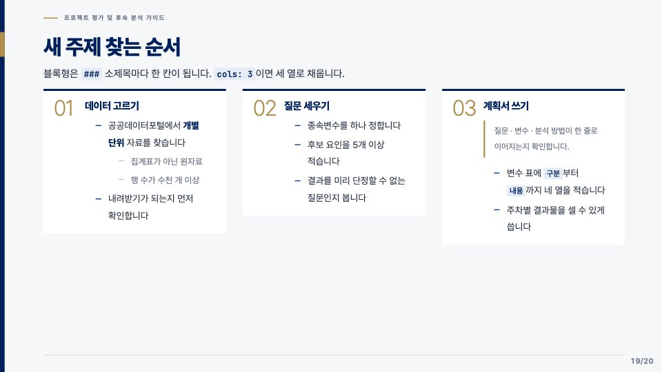

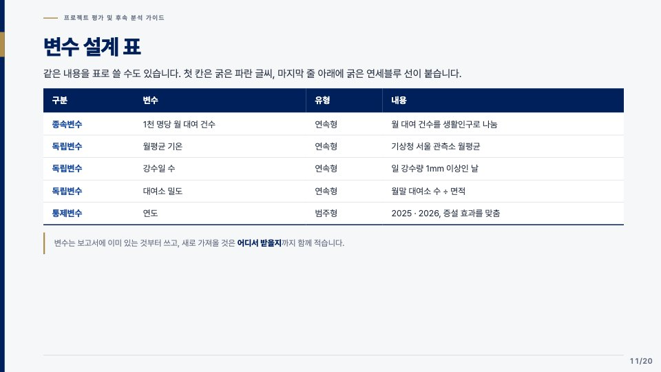

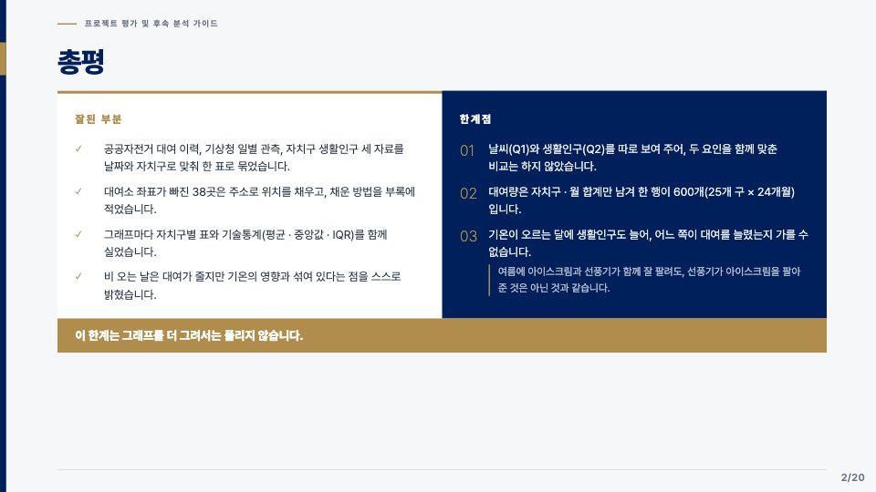


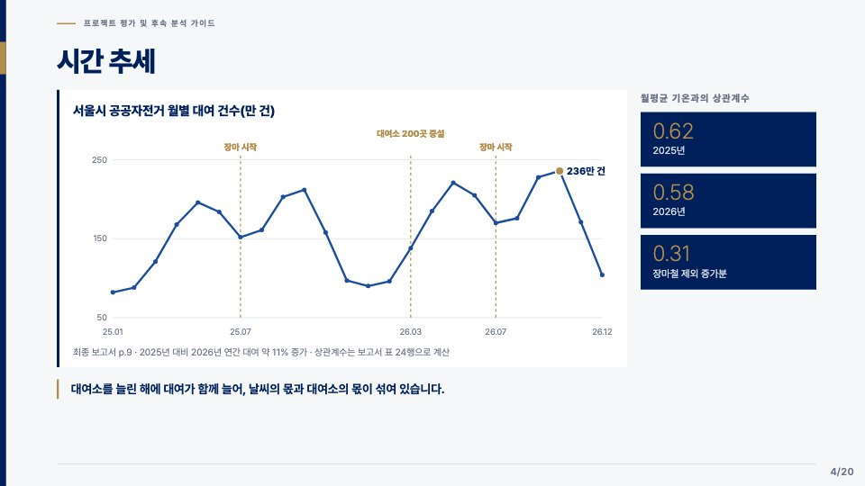

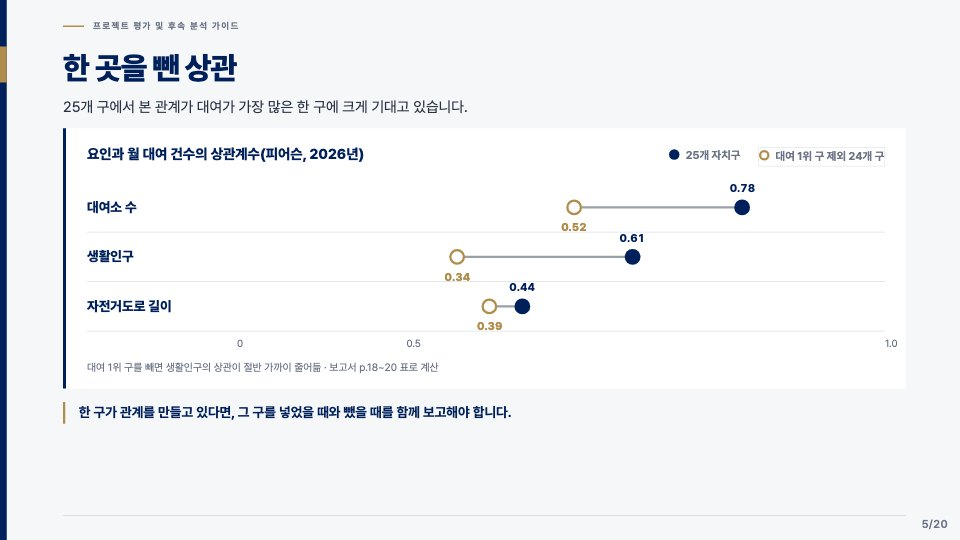

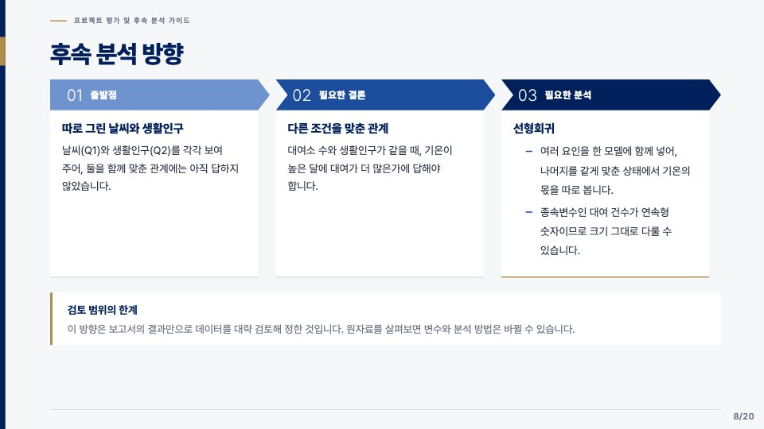


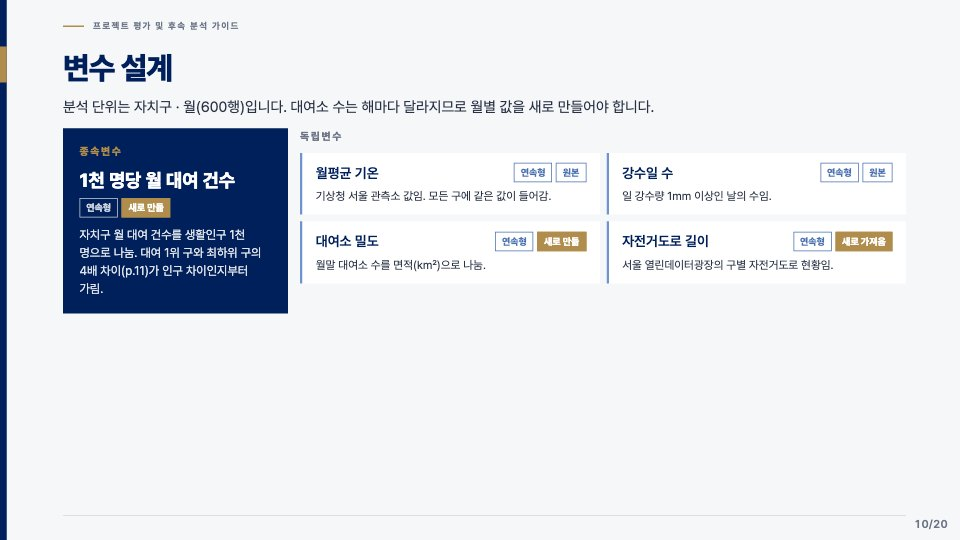

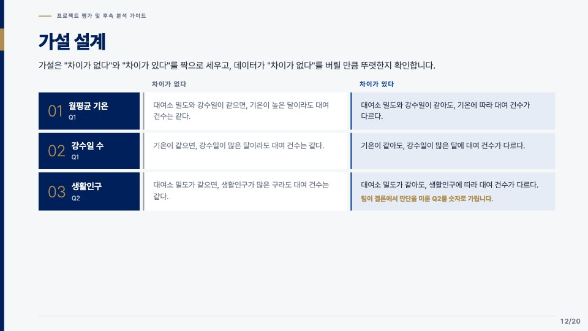

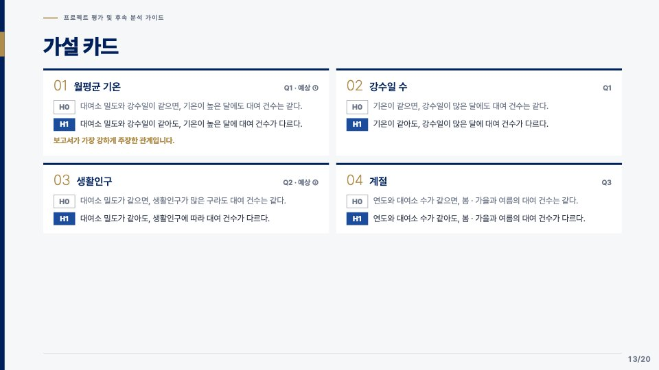

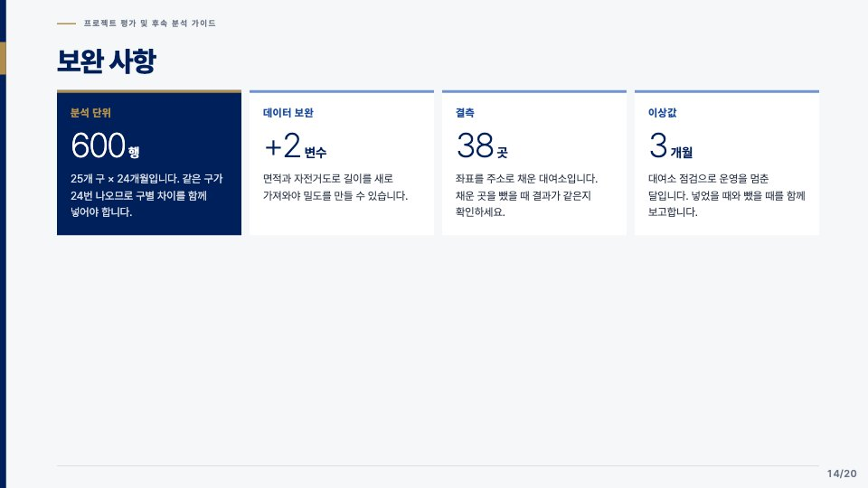

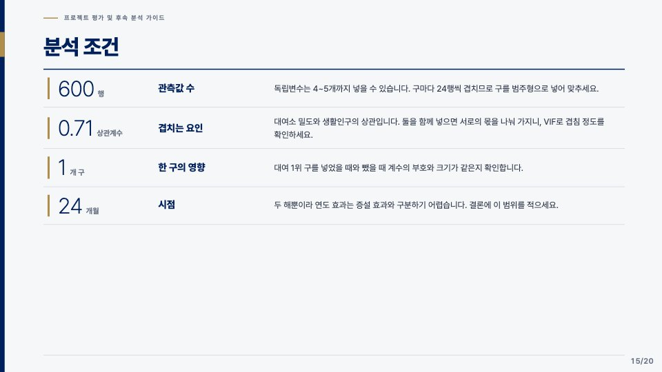

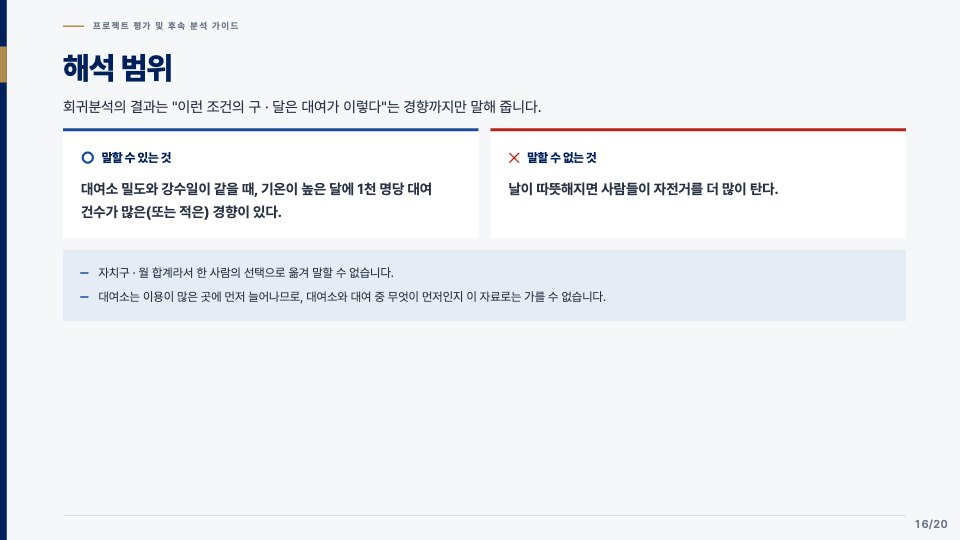

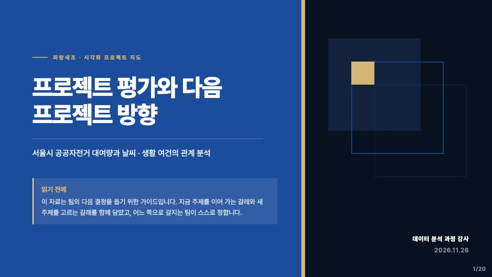

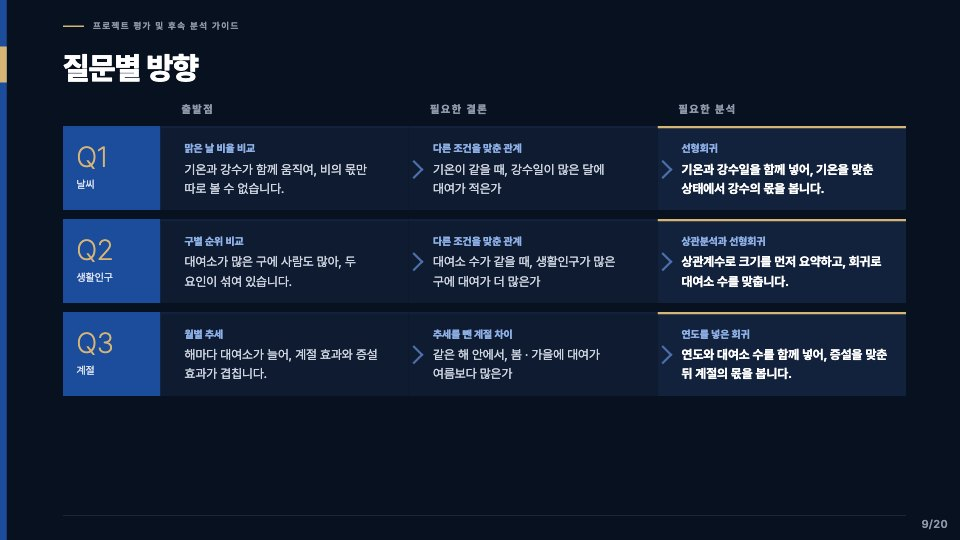
시작하기
저장소를 받은 뒤(git clone https://github.com/leekh4232/slidev-themes.git) 프런트매터에 테마 폴더 경로(theme: ./slidev-themes/editorial처럼 md 파일 기준)를 적는다. 첫 슬라이드의 프런트매터(헤드매터)에서 아래 옵션으로 덱 전체 모양을 정한다.
| 옵션 | 값 | 기본 |
|---|---|---|
colorMode | light면 밝은 테마, dark면 어두운 테마로 덱을 연다. 발표 중에는 d 키로 바꿀 수 있고, 다시 열면 이 값으로 돌아간다. 이 테마는 밝은 바탕을 기준으로 디자인했으므로 light를 적어 두는 것을 권한다 | 처음 한 번 어둡게, 그 뒤엔 마지막에 고른 테마 |
exportDark | true면 PDF·PNG 내보내기를 어두운 테마로, false면 밝은 테마로 | true (colorMode를 적었으면 그 테마) |
fontScale | 본문 배율(0.6~2). 덱을 이 배율로 열고, 0 키·배율 버튼을 누르면 이 값으로 돌아간다. PDF·PNG 내보내기에도 적용된다 | 마지막에 고른 배율 |
manuscript | true면 사이드바에 📄 원고 버튼을 둔다. 누르면 덱 원고(md)를 깃헙 스타일 일반 문서로 본다. false면 버튼을 뺀다 | true |
sidebar | true면 발표 화면 왼쪽에 목차 사이드바(슬라이드 바깥), false면 사이드바 없이 슬라이드만 | true |
title | 덱 제목. 본문 쪽(default · blocks) 위의 머리줄에 그대로 올라가고, · (가운뎃점 양옆 공백)를 기준으로 앞은 과정 이름, 뒤는 단원 이름으로 사이드바에 올라간다 | - |
author | 표지 오른쪽 아래에 굵게 놓이는 작성자 | - |
첫 슬라이드는 layout: cover로 쓰고, 같은 프런트매터에 eyebrow(제목 위 금색 머리말)와 date(작성자 아래 날짜)를 적는다. # 제목 다음 문단은 부제가 되어 가는 흰 선 아래에 놓인다. 글꼴은 Pretendard Variable(코드는 JetBrains Mono), 쪽 전환은 fade다.
---
theme: ./slidev-themes/editorial
title: 프로젝트 평가 및 후속 분석 가이드
author: 데이터 분석 과정 강사
sidebar: true # 생략 가능 (기본값)
colorMode: light # 권장. light | dark
exportDark: false # 내보내기도 밝은 테마로
fontScale: 1 # 생략 가능. 본문 배율 0.6~2
layout: cover
eyebrow: 파랑새조 · 시각화 프로젝트 지도
date: 2026.11.26
---
# 프로젝트 평가와 다음 프로젝트 방향
서울시 공공자전거 대여량과 날씨 · 생활 여건의 관계 분석사이드바와 조작
목차 사이드바 · 단축키 · 원고 보기 · 넘침 표시는 hossam의 사이드바와 조작과 같다. 목차는 슬라이드마다 첫 제목을 모은다. 표지(1쪽)와 hideInToc: true를 적은 쪽은 목록에 넣지 않는다.
| 키 | 동작 |
|---|---|
| → ← Space | 다음·이전 |
| s | 사이드바 접기·펼치기(◀ / ☰ 버튼) |
| a | 애니메이션 켬·끔. 끄면 클릭 단계(v-click)가 전부 보인다 |
| d | 밝은·어두운 테마 전환 |
| + - 0 | 본문 확대·축소·기본 크기(60~200%). 캔버스는 그대로고 글자·여백만 바뀐다 |
슬라이드는 항상 16:9(1280×720)다. 내용이 캔버스를 넘치면 잘리고, 발표 화면에서만 빨간 테두리와 넘친 길이(예: 내용 넘침 ↓120px)가 뜬다. 모든 쪽 오른쪽 아래에 쪽 번호가 현재/전체 꼴로 붙는다. 원고 보기(📄)에서 프롭으로만 그리는 인포그래픽 컴포넌트는 그림이 빠지고 title이 있으면 그것만 굵은 글로 남는다.
글쓰기
##는 쪽 제목(굵은 연세블루). 제목 바로 다음 문단은 리드문으로, 제목 아래에 붙어 한 줄 요약을 한다.###는 작은 굵은 소제목이고,blocks레이아웃에서는 칸 제목이 된다.- 본문 쪽(
default·blocks)에는 왼쪽 끝에 연세블루 띠(위쪽에 금색 짧은 마디), 위에 덱title머리줄, 아래에 가는 바닥선이 자동으로 붙는다. - 목록 글머리는 짧은 파란 가로선, 둘째 수준은 회색 가는 선에 회색 글.
**굵게**는 연세블루로 굵게. - 인라인 코드(백틱 하나)는 옅은 파랑 바탕의 직각 상자이고 줄을 바꾸지 않는다.
- 인용(
>문단)은 왼쪽 금색 세로선에 회색의 조금 작은 글. 보충 한 줄에 쓴다. - 표는 연세블루 머리행(흰 글, 한 줄), 가는 줄 구분, 첫 칸은 굵은 파란 글씨로 한 줄, 마지막 줄 아래에 굵은 연세블루 선.
- 줄바꿈은 단어(띄어쓰기) 단위다. 한글도 낱글자 사이에서 끊지 않는다.
- 슬라이드 md에
<style>이나style="…"를 쓰지 않아도 된다. 상자를 직접 만들 때는 UnoCSS 유틸리티에 테마 색 변수(var(--blue)·var(--blue-2)·var(--gold)·var(--paper)·var(--heading)·var(--muted))를 넣어 쓴다. 이 변수는 어두운 테마에서 저절로 바뀐다.
## 변수 설계 표
같은 내용을 표로 쓸 수도 있습니다.
| 구분 | 변수 | 유형 | 내용 |
|:--|:--|:--|:--|
| 종속변수 | 1천 명당 월 대여 건수 | 연속형 | 월 대여 건수를 생활인구로 나눔 |
| 독립변수 | 월평균 기온 | 연속형 | 기상청 서울 관측소 월평균 |
> 변수는 보고서에 이미 있는 것부터 쓰고, 새로 가져올 것은 **어디서 받을지**까지 함께 적습니다.
<div class="mt-5 px-5 py-3 bg-[var(--paper)] border-l-4 border-[var(--gold)]">
<div class="font-bold text-[var(--heading)]">검토 범위의 한계</div>
<div class="text-sm text-[var(--muted)] mt-1">이 방향은 보고서의 결과만으로 정한 것입니다.</div>
</div>레이아웃
슬라이드 프런트매터의 layout으로 고른다. 적지 않으면 default.
| layout | 모양 | 프런트매터 |
|---|---|---|
default | 본문. 왼쪽 연세블루 띠, 위 머리줄, 아래 바닥선. 제목 아래에 문단 · 목록 · 표 · 컴포넌트가 위에서부터 흐른다 | - |
cover | 표지. 왼쪽 62%는 연세블루 색면(금색 머리말 · 흰 제목 · 부제), 오른쪽은 겹친 직각 사각형 장식과 작성자 · 날짜 | eyebrow date (작성자는 덱 헤더의 author) |
section | 간지. 화면 전체가 연세블루 색면, 왼쪽에 아주 크고 가는 금색 번호, 오른쪽에 흰 제목과 부제 | no |
blocks | 블록형. 제목과 리드문은 위에 두고, ### 소제목마다 그 아래 내용을 한 칸으로 묶어 열에 채운다 | cols(기본 2) |
cover — 표지
# 제목 하나와 부제 문단을 쓴다. 제목 아래에 직접 만든 상자(예: 읽기 전에)를 둘 수 있다. 색면 위이므로 글은 text-white/85, 바탕은 bg-white/10처럼 흰색 투명도로 쓴다.
---
layout: cover
eyebrow: 파랑새조 · 시각화 프로젝트 지도
date: 2026.11.26
---
# 프로젝트 평가와 다음 프로젝트 방향
서울시 공공자전거 대여량과 날씨 · 생활 여건의 관계 분석
<div class="mt-10 px-4 py-3 border-l-4 border-[var(--gold)] bg-white/10 text-sm leading-relaxed text-white/85">
<div class="font-bold text-[var(--gold)] mb-1">읽기 전에</div>
이 자료는 팀의 다음 결정을 돕기 위한 가이드입니다.
</div>section — 간지
no는 숫자로 적으면 두 자리(01)로 보인다. 생략하면 번호 없이 제목만 놓인다. 제목은 # · ## 모두 같은 크기로 보이고, 제목 다음 문단은 부제가 된다.
---
layout: section
no: 1
---
## 갈래 A. 지금 주제 이어 가기
날씨와 생활 여건을 자치구 · 월 단위로 묶어 선형회귀로 발전시키는 방향입니다.blocks — 블록형
원고는 평범한 마크다운(### 소제목 + 본문)으로 쓴다. 화면에 그린 뒤 첫 ###부터 소제목마다 칸 하나로 묶는다. 칸은 흰 바탕, 위에 굵은 연세블루 선, 왼쪽에 금색 가는 큰 번호(01, 02 …)가 붙는다. 칸은 열 단위로 위에서 아래로 채우고(신문 단처럼), 한 칸이 두 열에 걸쳐 쪼개지지 않는다. 첫 ### 앞의 제목과 리드문은 칸 위에 그대로 남는다.
---
layout: blocks
cols: 3
---
## 새 주제 찾는 순서
블록형은 `###` 소제목마다 한 칸이 됩니다.
### 데이터 고르기
- 공공데이터포털에서 **개별 단위** 자료를 찾습니다
- 집계표가 아닌 원자료
### 질문 세우기
- 종속변수를 하나 정합니다
### 계획서 쓰기
> 질문 · 변수 · 분석 방법이 한 줄로 이어지는지 확인합니다.컴포넌트
모두 프롭에 배열 · 객체를 넘겨 그린다(슬롯 없음). 배열 프롭은 :items="[ … ]"처럼 앞에 :를 붙이고, 안의 문자열은 작은따옴표로 감싼다. 여러 줄로 나눠 써도 된다. 문자열 안에 작은따옴표를 쓰지 않는다.
Review — 총평 대조판
왼쪽은 잘된 점(흰 칸 · 금색 윗선 · 금색 ✓), 오른쪽은 한계(연세블루 칸 · 금색 번호), 아래는 금색 띠 한 줄.
| 프롭 | 뜻 | 기본 |
|---|---|---|
good | 잘된 점 문장 배열 | 필수 |
limits | { text, sub } 배열. sub는 아래에 금색 선과 함께 붙는 보충 한 줄(비유 등) | 필수 |
goodLabel · limitLabel | 두 칸의 머리말 | 잘된 부분 · 한계점 |
foot | 아래 금색 띠 글 | - |
<Review :good="[
'세 자료를 날짜와 자치구로 맞춰 한 표로 묶었습니다.',
'그래프마다 자치구별 표와 기술통계를 함께 실었습니다.'
]" :limits="[
{text:'날씨와 생활인구를 따로 보여 주었습니다.'},
{text:'어느 쪽이 대여를 늘렸는지 가를 수 없습니다.', sub:'여름에 아이스크림과 선풍기가 함께 잘 팔리는 것과 같습니다.'}
]" foot="이 한계는 그래프를 더 그려서는 풀리지 않습니다." />Bars — 가로 막대
막대와 칸은 모두 직각이다. 강조할 막대 하나만 진한 연세블루, 나머지는 옅은 파랑. 두 개를 나란히 둘 때는 ed-row로 감싼다.
| 프롭 | 뜻 | 기본 |
|---|---|---|
items | { label, value } 배열 | 필수 |
max | 막대가 가득 차는 값 | 100 |
unit | 값 뒤 단위 | % |
digits | 값의 소수 자릿수 | 1 |
highlight | 강조할 막대 순번(0부터) | 마지막 |
title · note | 위 차트 제목 · 아래 출처나 설명 한 줄 | - |
<div class="ed-row">
<Bars title="맑은 날 대여 비율" :items="[{label:'도심권',value:71.2},{label:'동남권',value:82.9}]" note="최종 보고서 p.12" />
<Bars title="출퇴근 시간대 비율" :items="[{label:'도심권',value:38.0},{label:'동남권',value:55.1}]" note="최종 보고서 p.14" />
</div>
<div class="ed-caption">각 요인이 대여량에 주는 몫을 그래프로는 가를 수 없습니다.</div>Trend — 꺾은선 추세
점을 왼쪽에서 오른쪽으로 잇고, 최댓값 점은 금색으로 키워 옆에 값을 쓴다. marks 자리에는 금색 세로 점선과 이름을 긋는데, 이름끼리 겹치지 않게 한 칸씩 높이를 엇갈린다. y축 눈금은 최솟값 · 가운데 · 최댓값 세 개다. facts를 주면 오른쪽에 연세블루 숫자 칸이 세로로 놓인다.
| 프롭 | 뜻 | 기본 |
|---|---|---|
points | { label, value } 배열 | 필수 |
marks | { at, text } 배열. at은 점 순번(0부터) | [] |
ticks | x축에 이름을 쓸 순번 배열 | 처음 · 끝 · marks 자리 |
min · max | y축 범위 | 값의 최소 · 최대 |
unit | 최댓값 옆 단위 | - |
title · note | 차트 제목 · 아래 설명 한 줄 | - |
facts · factsTitle | 오른쪽 숫자 칸({ value, label } 배열)과 그 머리말 | - |
<Trend title="월별 대여 건수(만 건)" :points="[
{label:'25.01',value:82},{label:'25.02',value:88},{label:'25.03',value:121},{label:'25.04',value:168}
]" :marks="[{at:2,text:'대여소 증설'}]" :min="50" :max="250" unit="만 건"
factsTitle="월평균 기온과의 상관계수" :facts="[{value:'0.62',label:'2025년'}]"
note="최종 보고서 p.9" />Dumbbell — 덤벨 비교
줄마다 같은 눈금 위에 a(진한 점, 값은 위)와 b(금색 빈 점, 값은 아래)를 회색 선으로 잇는다. 두 조건에서 같은 값이 얼마나 바뀌는지 보여 준다. 아래 눈금은 0 · max의 절반 · max.
| 프롭 | 뜻 | 기본 |
|---|---|---|
rows | { label, a, b } 배열. 값은 0~max | 필수 |
aLabel · bLabel | 범례 | 필수 |
max | 눈금 끝 값 | 1 |
digits | 값의 소수 자릿수 | 2 |
title · note | 제목 · 아래 설명 한 줄 | - |
<Dumbbell title="요인과 월 대여 건수의 상관계수" aLabel="25개 자치구" bLabel="1위 구 제외 24개 구" :rows="[
{label:'대여소 수',a:0.78,b:0.52},{label:'생활인구',a:0.61,b:0.34}
]" note="보고서 p.18~20 표로 계산" />Flow — 흐름도
단계를 왼쪽에서 오른쪽으로 놓고, 위에 직각 꺾쇠 모양 머리띠(번호 · kicker)를 붙인다. 머리띠는 첫 단계가 옅은 파랑, 둘째가 중간 파랑, 마지막이 연세블루이고, 마지막 단계는 아래에 금색 선이 붙는다.
| 프롭 | 뜻 | 기본 |
|---|---|---|
steps | { kicker, title, text } 배열. text는 문자열 하나(문단) 또는 문자열 배열(목록) | 필수 |
<Flow :steps="[
{kicker:'출발점', title:'따로 그린 날씨와 생활인구', text:'둘을 함께 맞춘 관계에는 아직 답하지 않았습니다.'},
{kicker:'필요한 결론', title:'다른 조건을 맞춘 관계', text:'대여소 수가 같을 때, 기온이 높은 달에 대여가 더 많은가'},
{kicker:'필요한 분석', title:'선형회귀', text:['여러 요인을 한 모델에 함께 넣습니다.','종속변수가 연속형 숫자입니다.']}
]" />Lanes — 질문별 흐름 띠
질문마다 한 줄(띠)로, 왼쪽 연세블루 꼬리표(금색 가는 큰 글 · 작은 이름) 뒤에 단계를 꺾쇠 화살표로 잇는다. 마지막 단계 칸은 금색 윗선과 옅은 파랑 바탕으로 강조한다. 단계 열 수는 줄의 단계 수를 따르므로(heads가 있으면 머리줄도 그 수), 줄마다 단계 수를 같게 쓰면 열이 맞는다.
| 프롭 | 뜻 | 기본 |
|---|---|---|
lanes | { tag, title, steps } 배열. steps는 { kicker, text } 배열 | 필수 |
heads | 단계 열 이름(위 머리줄) 배열 | - |
<Lanes :heads="['출발점','필요한 결론','필요한 분석']" :lanes="[
{tag:'Q1', title:'날씨', steps:[
{kicker:'맑은 날 비율 비교', text:'기온과 강수가 함께 움직입니다.'},
{kicker:'다른 조건을 맞춘 관계', text:'기온이 같을 때, 강수일이 많은 달에 대여가 적은가'},
{kicker:'선형회귀', text:'기온과 강수일을 함께 넣습니다.'}
]}
]" />VarGrid — 변수 카드판
왼쪽은 종속변수 하나를 연세블루 큰 칸으로, 오른쪽은 독립변수를 카드 격자로 놓는다. 이름 옆에 type과 src 꼬리표가 붙고, src가 원본이 아니면(새로 만듦 · 새로 가져옴 …) 금색 꼬리표가 된다.
| 프롭 | 뜻 | 기본 |
|---|---|---|
target | 종속변수 { name, type, src, text } | 필수 |
items | 독립변수 배열(모양은 target과 같음) | 필수 |
cols | 카드 열 수 | 2 |
targetLabel · itemsLabel | 두 쪽 머리말 | 종속변수 · 독립변수 |
<VarGrid :target="{name:'1천 명당 월 대여 건수', type:'연속형', src:'새로 만듦', text:'월 대여 건수를 생활인구로 나눔.'}" :items="[
{name:'월평균 기온', type:'연속형', src:'원본', text:'기상청 서울 관측소 값임.'},
{name:'자전거도로 길이', type:'연속형', src:'새로 가져옴', text:'서울 열린데이터광장 자료임.'}
]" :cols="2" />Hypo — 가설 비교표
가설마다 한 줄로, 왼쪽 연세블루 이름 칸(금색 번호 · 이름 · tag), 가운데 "차이가 없다" 칸(흰 바탕 · 회색 글), 오른쪽 "차이가 있다" 칸(옅은 파랑 바탕)을 놓는다. note는 오른쪽 칸 아래 금색 한 줄. 가설이 4개 이하일 때 알맞다.
| 프롭 | 뜻 | 기본 |
|---|---|---|
items | { label, tag, h0, h1, note } 배열 | 필수 |
h0Label · h1Label | 두 열의 머리말 | 차이가 없다 · 차이가 있다 |
<Hypo :items="[
{label:'월평균 기온', tag:'Q1', h0:'다른 조건이 같으면, 기온이 높은 달이라도 대여 건수는 같다.', h1:'다른 조건이 같아도, 기온에 따라 대여 건수가 다르다.'},
{label:'생활인구', tag:'Q2', h0:'…', h1:'…', note:'팀이 판단을 미룬 Q2를 숫자로 가립니다.'}
]" />HypoGrid — 가설 카드
Hypo와 같은 items를 카드 격자로 놓는다. 카드 안에 H0(회색 테두리 꼬리표)와 H1(파란 꼬리표)을 위아래로 쌓고, tag는 카드 오른쪽 위, note는 아래 금색 한 줄.
| 프롭 | 뜻 | 기본 |
|---|---|---|
items | { label, tag, h0, h1, note } 배열 | 필수 |
cols | 카드 열 수 | 2 |
<HypoGrid :items="[
{label:'월평균 기온', tag:'Q1 · 예상 ①', h0:'…', h1:'…', note:'보고서가 가장 강하게 주장한 관계입니다.'},
{label:'강수일 수', tag:'Q1', h0:'…', h1:'…'}
]" :cols="2" />Stats — 큰 숫자 칸
큰 가는 숫자 칸을 나란히 놓는다. 첫 칸만 연세블루 바탕에 금색 윗선이고, 나머지는 흰 바탕에 옅은 파랑 윗선.
| 프롭 | 뜻 | 기본 |
|---|---|---|
items | { label, value, unit, text } 배열. value는 글('8,010' · '+2') | 필수 |
cols | 열 수 | items 개수 |
<Stats :items="[
{label:'분석 단위', value:'600', unit:'행', text:'25개 구 × 24개월입니다.'},
{label:'데이터 보완', value:'+2', unit:'변수', text:'면적과 자전거도로 길이를 새로 가져옵니다.'}
]" />Checklist — 점검 목록
항목을 가로줄로 쌓는다. 왼쪽 금색 세로선 옆에 큰 가는 값과 단위, 가운데 굵은 이름, 오른쪽 설명.
| 프롭 | 뜻 | 기본 |
|---|---|---|
rows | { value, unit, label, text } 배열 | 필수 |
<Checklist :rows="[
{label:'관측값 수', value:'600', unit:'행', text:'독립변수는 4~5개까지 넣을 수 있습니다.'},
{label:'겹치는 요인', value:'0.71', unit:'상관계수', text:'VIF로 겹침 정도를 확인하세요.'}
]" />CanCannot — 해석 범위 판
왼쪽은 말할 수 있는 문장(파란 윗선 · ○), 오른쪽은 말할 수 없는 문장(빨간 윗선 · ✕), 아래는 옅은 파랑 바탕의 근거 목록. 머리말을 바꾸면 "필요한 것 / 지금 상태" 같은 대조판으로도 쓴다.
| 프롭 | 뜻 | 기본 |
|---|---|---|
can · cannot | 문장 배열 | 필수 |
notes | 아래 근거 목록 배열 | - |
canLabel · cannotLabel | 두 칸의 머리말 | 말할 수 있는 것 · 말할 수 없는 것 |
<CanCannot :can="['기온이 높은 달에 대여 건수가 많은 경향이 있다.']" :cannot="['날이 따뜻해지면 사람들이 자전거를 더 많이 탄다.']" :notes="[
'자치구 · 월 합계라서 한 사람의 선택으로 옮겨 말할 수 없습니다.'
]" />
<CanCannot canLabel="다음 주제에 필요한 것" cannotLabel="지금 주제의 상태" :can="['행 수가 수천 개 이상']" :cannot="['600행, 같은 구가 24번 반복']" />클래스
| 클래스 | 뜻 |
|---|---|
.ed-row | 두 칸을 같은 폭으로 나란히 놓는다(Bars 두 개 등) |
.ed-caption | 그림 아래 결론 한 줄. 왼쪽 금색 세로선에 굵은 연세블루 글 |
<div class="ed-row">
<Bars … />
<Bars … />
</div>
<div class="ed-caption">시간이 지나 함께 늘었는지는 이 그래프로 알 수 없습니다.</div>전체 예제
editorial-example.md — 가상의 팀이 낸 시각화 프로젝트 보고서를 읽고 다음 프로젝트 방향을 정하는 20쪽 덱. 레이아웃 네 가지와 컴포넌트 열두 가지가 모두 들어 있다. 저장소 안에서 우클릭 → Open with Slidev.